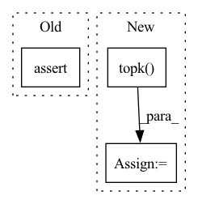

Pattern ID :34171

Before Change
// final result
output = comodel.forward_step(zeros)
assert torch.allclose(target, output, atol=0.3) // inexact
assert target_top10[0] == output_top10[0]
assert len(set(target_top10[:3]) - set(output_top10[:3])) <= 1
assert len(set(target_top10) - set(output_top10)) <= 4
After Change
// final result
output = comodel.forward_step(pad)
output_top10 = torch.topk(output, k=10)[1][0].tolist()
// assert torch.allclose(target, output, atol=0.8) // inexact
assert target_top10[0] == output_top10[0]
In pattern: SUPERPATTERN
Frequency: 3
Non-data size: 3
Instances
Fragment ID: 97597049
Project Name: lukashedegaard/co3d
Commit Name: 30aa0777c650cf0ac718a31469558988dbe3bf59
Time: 2021-09-10
Author: lh@eng.au.dk
File Name: tests/cox3d/test_x3d.py
M Class Name: AnonimousClass
N Class Name: AnonimousClass
M Method Name: test_CoX3D_se_mod(0)
N Method Name: test_CoX3D_se_mod(0)
M Parent Class:
N Parent Class:
M File Name: tests/cox3d/test_x3d.py
N File Name: tests/cox3d/test_x3d.py
M Start Line: 694
M End Line: 791
N Start Line: 694
N End Line: 779
'>
Before Change
pos_len_list = eval_data.get_pos_len_list()
topk_index = torch.cat(batch_matrix_list, dim=0).cpu().numpy()
assert len(pos_len_list) == len(topk_index)
// get metrics
metric_dict = {}
result_list = self._calculate_metrics(pos_len_list, topk_index)
After Change
scores_matrix = pad_sequence(scores_list, batch_first=True, padding_value=-np.inf) // nusers x items
// get topk
_, topk_index = torch.topk(scores_matrix, max(self.topk), dim=-1) // nusers x k
return topk_index
'>
Fragment ID: 97597048
Project Name: rucaibox/recbole
Commit Name: df66b6285fec567d1f3ca0d6ee9d9ceb71f792b6
Time: 2020-10-20
Author: 1337990880@qq.com
File Name: recbole/evaluator/topk_evaluator.py
M Class Name: TopKEvaluator
N Class Name: TopKEvaluator
M Method Name: collect(4)
N Method Name: collect(3)
M Parent Class: AbstractEvaluator
N Parent Class: AbstractEvaluator
M File Name: recbole/evaluator/topk_evaluator.py
N File Name: recbole/evaluator/topk_evaluator.py
M Start Line: 69
M End Line: 80
N Start Line: 38
N End Line: 57
'>
Before Change
assert torch.allclose(target, output, atol=0.5) // inexact
assert target_top10[0] == output_top10[0]
assert len(set(target_top10[:3]) - set(output_top10[:3])) <= 1
assert len(set(target_top10) - set(output_top10)) <= 4
After Change
// final result
output = comodel.forward_step(pad)
output_top10 = torch.topk(output, k=10)[1][0].tolist()
// assert torch.allclose(target, output, atol=0.8) // inexact
assert target_top10[0] == output_top10[0]
'>
Fragment ID: 97597050
Project Name: lukashedegaard/co3d
Commit Name: a0c30f4d90d95e358de155ec07f8272e2550b861
Time: 2021-09-08
Author: lh@eng.au.dk
File Name: tests/cox3d/test_x3d.py
M Class Name: AnonimousClass
N Class Name: AnonimousClass
M Method Name: test_CoX3D_se_mod(0)
N Method Name: test_CoX3D_se_mod(0)
M Parent Class:
N Parent Class:
M File Name: tests/cox3d/test_x3d.py
N File Name: tests/cox3d/test_x3d.py
M Start Line: 694
M End Line: 791
N Start Line: 694
N End Line: 779